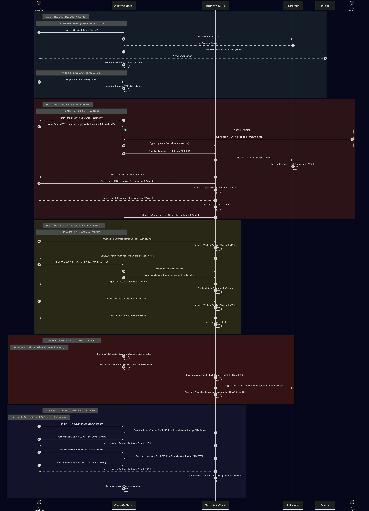

Spesifikasi Alur Produk & User Journey berdasarkan Peran Role-Based Flow untuk Tim Eksekusi IT.
Sistem Fintech1000s membagi wewenang secara jelas kepada tiga entitas yang tidak saling bertabrakan:
Pemegang kendali upload data secara masif (via CSV). Bertugas mendaftarkan daftar prioritas Merchant agar mendapatkan pengajuan fasilitas instan.
Bertindak sebagai verifikator tunggal dan pemberi plafon limit jika pengajuan Merchant tidak ada di dalam daftar cepat Admin.
Klien pembeli yang menikmati Limit Fintech1000s untuk menjaga agar bisnis mereka bebas dari blokir transaksi di Mitra1000s.
Ketika Admin sistem menerima instruksi data dari SA, Admin dapat melakukan upload data ke dalam sistem Fintech1000s. File ini memuat Kode Toko Merchant dan Nominal Limit Kredit untuk keperluan persetujuan otomatis.
Merchant yang terdaftar dalam data Whitelist akan mendapatkan otomatisasi persetujuan saat mengajukan fasilitas akun kredit Fintech1000s. Sistem akan melakukan bypass persetujuan SA manual dan langsung memberikan Plafon Limit sesuai nominal yang telah ditentukan.
Jika Merchant yang mengajukan Fintech1000s tidak berada pada daftar Whitelist, maka instruksi verifikasi diteruskan ke Dashboard SA terkait. SA akan menentukan persetujuan dan besaran nominal limit (misal: 60 Juta) secara manual.
Apabila Merchant gagal menyelesaikan kewajiban hingga batas maksimal ekstensi tempo (lebih dari 56 Hari / Hari ke-57), sistem IT akan menandainya sebagai NPL/Kredit Macet. SA akan menerima notifikasi otomatis untuk mengambil alih tugas penagihan secara eksternal.
Aplikasi akan memunculkan menu daftar Invoice Reguler Merchant (Misal: INV-JAN40 dan INV-FEB50) yang jatuh temponya tersisa Kurang dari 7 Hari.
Misalkan Limit Akun adalah Rp 60 Juta. Jika Merchant mencoba untuk memilih salah satu Invoice tersebut yang totalnya lebih besar dari limit kredit dan menekan "Perpanjang Tempo", sistem melakukan validasi berikut:
Apabila tagihan (Rp 90 Juta) melebihi batas limit yang tersedia, sistem mengatur syarat otomatis: Menahan proses perpanjangan dan mengharuskan pemotongan sisa tagihan. Merchant diwajibkan menyetor uang selisihnya yakni Rp 30 Juta secara cash/VA agar limit bisa membiayai sisa 60 Jutanya (Sejajar dengan Plafon).
Sistem bekerja mengadaptasi sistem Limit Bergulir. Limit tidak terkunci secara terikat pada satu id transaksi secara permanen, tetapi terkait langsung pada status akun pembayaran.
Saat Merchant berhasil mencatat pembayaran pokok 20 Juta di Minggu Pertama, limit pembayaran akun Fintech1000s mereka langsung dikembalikan ke kuota sebesar +20 Juta. Limit aktif tersebut dapat digunakan pada pelunasan tagihan INV-FEB40 lainnya secara instan.
• 10 Jan: Order Semen Tiga Roda (INV-JAN40) - Rp 40 Juta. Tempo 45
Hr (24 Feb)
• 10 Feb: Order Besi Beton (INV-FEB50) - Rp 50 Juta. Tempo 30 Hr
(12 Mar)
H-6 jatuh tempo INV-JAN40, Merchant ajukan perpanjangan tempo. Validasi: Tagihan (40 Jt) < Limit Bebas (60 Jt). Sistem Auto-Approve! Sisa limit aktif: Rp 20 Juta.
Pada H-2 jatuh tempo INV-FEB50, Merchant mengajukan perpanjangan tempo sebesar Rp50 Juta. Validasi gagal karena sisa limit aktif (Rp20 Juta) < nominal pengajuan (Rp50 Juta), sehingga terdapat kekurangan limit sebesar Rp30 Juta. Oleh karena itu, Merchant otomatis diharuskan untuk mencicil pokok sebesar Rp30 Juta terlebih dahulu dari tagihan FIN-JAN40 (hasil restrukturisasi INV-JAN40), atau mencicil pokok Rp30 Juta langsung dari invoice INV-FEB50 . Setelah cicilan pokok tersebut dibayarkan, Merchant dapat mengajukan ulang perpanjangan tempo untuk INV-FEB50. Saat sistem mendeteksi bahwa limit kredit sudah mencukupi tagihan INV-FEB50, maka sistem akan secara otomatis menyetujui (Auto-Approve) perpanjangan tempo tersebut.
* Prefix FIN- digunakan agar invoice restrukturisasi Fintech1000s mudah dibedakan dari invoice reguler INV- Mitra1000s.
Kelonggaran durasi perpanjangan tempo berjalan maksimum hingga 56 Hari (8 Minggu Cicilan). Pada hari ke-57, jika batas tersebut tidak terselesaikan, sistem secara otonom akan mengeksekusi mitigasi status berikut:
4 User Story · Actor: Merchant, Selling Agent, Admin
Sebagai Merchant, saya ingin mendapatkan notifikasi penawaran fasilitas kredit Fintech1000s ketika invoice mendekati jatuh tempo dan belum lunas, sehingga saya bisa segera mengambil tindakan sebelum akun saya diblokir.
Sebagai Merchant, saya ingin dapat mengajukan pembukaan akun kredit Fintech1000s langsung dari aplikasi Mitra1000s, sehingga saya tidak perlu mengunduh atau berpindah ke aplikasi lain untuk mendapatkan fasilitas kredit.
Sebagai Selling Agent, saya ingin menerima notifikasi dan dapat mereview pengajuan akun kredit Fintech1000s dari Merchant yang ter-assign ke saya, sehingga saya bisa mengontrol kelayakan Merchant sebelum fasilitas kredit diaktifkan.
Sebagai Admin, saya ingin dapat menginput data whitelist Merchant beserta limit kreditnya, baik secara manual maupun via upload CSV, sehingga Merchant yang sudah diketahui layak bisa mendapatkan akun kredit secara otomatis tanpa harus menunggu review SA.
kode_toko dan amount_limit_kredit.kode_toko dan amount_limit_kredit.amount_limit_kredit di data whitelist.2 User Story · Actor: Merchant
Sebagai Merchant, saya ingin dapat mengajukan perpanjangan tempo untuk invoice yang mendekati atau sudah melewati jatuh tempo, sehingga saya mendapatkan tambahan waktu cicilan tanpa harus langsung melunasi seluruh tagihan sekaligus.
FIN-) dan menandai invoice lama (INV-) sebagai PAID_BY_FINTECH.INV- dikelola Mitra1000s. Invoice prefix FIN- dikelola Fintech1000s sebagai hasil restrukturisasi.
Sebagai Merchant, saya ingin mendapatkan panduan dari sistem tentang cara menutup selisih antara total tagihan dan limit kredit aktif, sehingga saya tahu langkah apa yang perlu diambil dan dapat segera mengajukan perpanjangan tempo.
2 User Story · Actor: Merchant
Sebagai Merchant, saya ingin dapat membayar cicilan pokok setiap minggu menggunakan Virtual Account (VA) dengan kode billing yang unik, sehingga pembayaran saya tercatat dengan benar di sistem dan limit kredit aktif saya segera pulih.
CICIL-{invoice_id}-W{minggu}.FIN-
mana yang ingin dicicil jika memiliki lebih dari satu invoice aktif.CICIL- (cicilan pokok), PARSIAL- (pembayaran parsial), LUNAS- (pelunasan akhir).
Sebagai Merchant, saya ingin dapat melihat rekap lengkap semua tagihan Fintech1000s saya beserta jadwal cicilan yang aktif, sehingga saya bisa merencanakan arus kas dan tidak melewatkan cicilan yang menyebabkan sanksi.
FIN- aktif beserta sisa pokok masing-masing.1 User Story · Actor: Merchant
Sebagai Merchant, saya ingin dapat melunasi seluruh sisa pokok beserta bunga kumulatif sekaligus dalam satu transaksi, sehingga status invoice segera berubah menjadi lunas dan limit kredit saya pulih sepenuhnya.
FIN- mana pun.
LUNAS-) dengan nominal tepat sesuai total tagihan.
PAID.2 User Story · Actor: Sistem (Job Scheduler), Merchant
Sebagai Sistem (Job Scheduler), saya ingin secara otomatis memblokir akun transaksi Merchant di Mitra1000s dan mengeskalasi ke SA ketika batas 56 hari terlewati, sehingga risiko kredit macet dapat segera ditindaklanjuti oleh SA di lapangan.
FIN- yang melewati H+56 tanpa pelunasan
pokok.CREDIT DEFAULT / NPL.Sebagai Merchant, saya ingin tetap bisa mengakses Fintech1000s dan melakukan pembayaran cicilan atau pelunasan meskipun akun Mitra1000s saya sedang diblokir, sehingga saya bisa menyelesaikan kewajiban pembayaran dan akun saya segera aktif kembali.
FIN- lunas
(pokok + bunga), sistem secara otomatis membuka blokir akun
Mitra1000s.